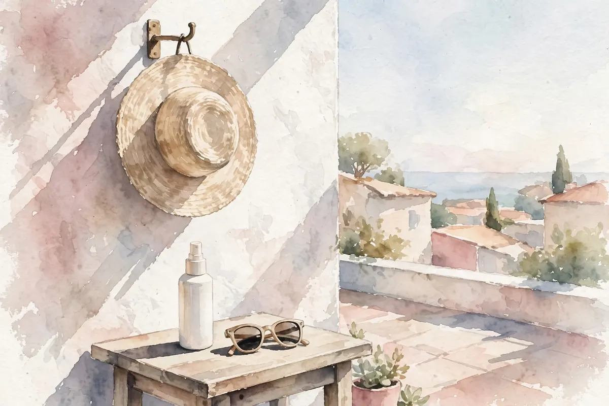
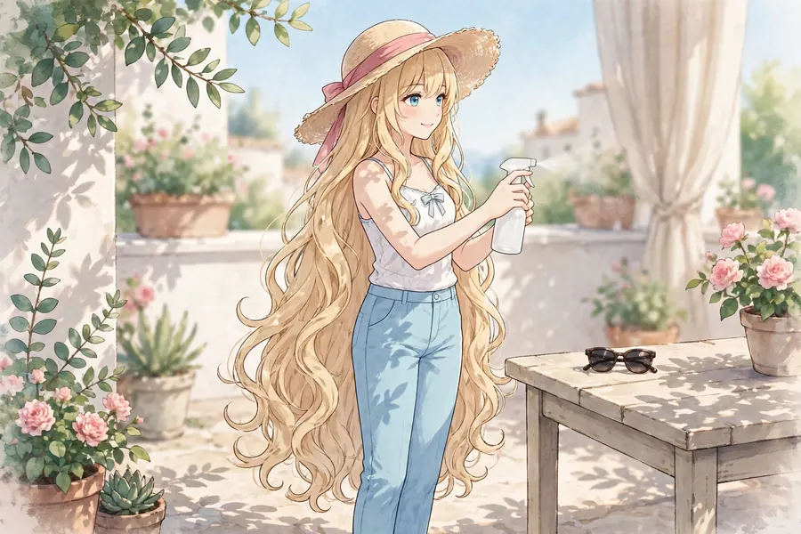

髪と頭皮の日差し対策

日差しの強い季節になると、髪と頭皮の対策について聞かれることが増えます。この記事では、アイテムの作用の話ではなく、対策の組み立て方と表示の読み方を整理します。
基本は、帽子と日傘で物理的に遮る
日差し対策の基本は、まず物理的に遮ることです。帽子は頭皮と髪の両方を覆えますし、日傘は移動中にも使えます。つばの広さや素材はさまざまなので、外出の場面（通勤、買い物、屋外で過ごす日）に合わせて選ぶと続けやすくなります。分け目やつむじなど、頭皮が見えやすい場所は、帽子で覆う範囲に入っているかも確認しておくと安心です。
髪をまとめ方で工夫する方法もあります。分け目を変える、帽子に合わせて髪型を調整するなど、道具と髪型の両面から組み立てられます。
髪用アイテムは、表示を読んで選ぶ
髪や頭皮に使う日差し対策アイテムには、スプレータイプやミストタイプなどがあります。パッケージにはSPFやPAといった表示が記載されている商品もあり、これは商品の表示区分です。数字の意味の詳しい説明は、メーカーの案内や公的な情報で確認してください。選ぶときは、表示とあわせて「洗い流し方がどう案内されているか」も確認しておくと、帰宅後の手順が組み立てやすくなります。
塗り直しやつけ直しの案内がある商品は、その表示に従います。汗をかく場面では、帽子との併用が現実的な組み立てです。
帰宅後は、いつもの手順に戻す
帰宅後は、シャンプーを含むいつもの手順で整えます。日差し対策のアイテムを使った日は、すすぎを丁寧にするなど、洗い方の工夫を加える程度で十分です。対策は「道具で遮る」「表示を読んでアイテムを使う」「帰宅後の手順」の3点セットで考えると、無理なく続けられます。
分け目とつむじは、頭皮の中でも日差しを受けやすい場所です。分け目を日によって少しずらす、帽子をかぶる日を増やすといった工夫は、道具いらずで取り入れられます。子どもの場合は、帽子をかぶる習慣そのものが中心になります。髪用のアイテムを使う場合は、その商品の対象表示を確認してからにしてください。また、スプレータイプのアイテムは、衣類や床にかからないよう、使う場所にも配慮が要ります。浴室や玄関など決まった場所で使うと、後片付けも含めて手順が安定します。帽子は、汗をかく季節には洗える素材を選ぶと、衛生面でも続けやすくなります。対策は、特別なことの積み重ねではなく、日常の道具と習慣の組み立てです。
外出の時間が長い日は、対策を「朝の準備」に組み込んでおくと忘れにくくなります。帽子を玄関に置く、日傘をバッグの定位置に入れるなど、道具の置き場所を決めることが、そのまま対策の習慣化につながります。

セラフィナ「対策の基本は帽子と日傘。アイテムは表示と洗い流し方まで読んで選ぼう」